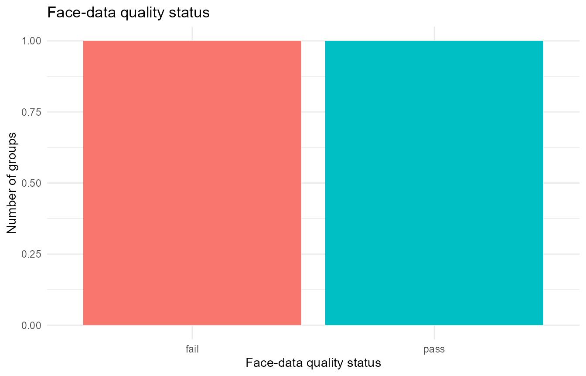
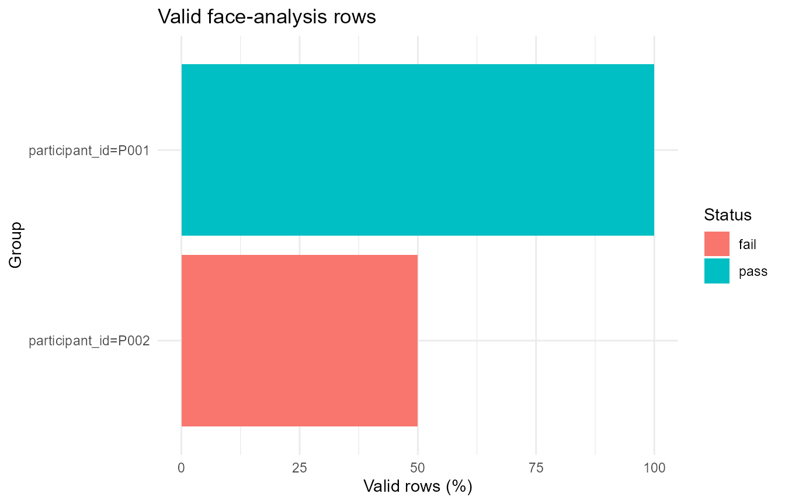
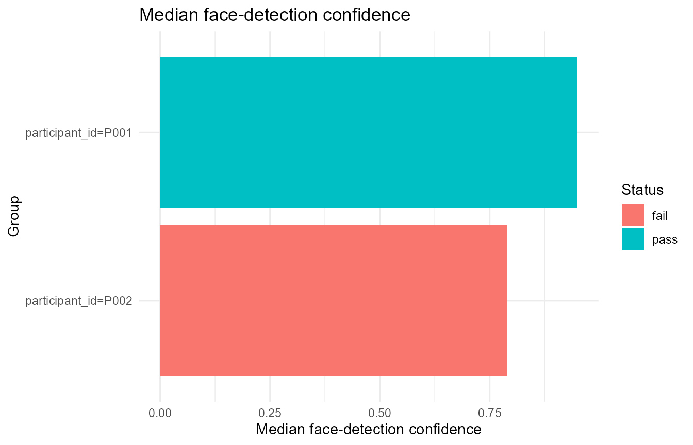
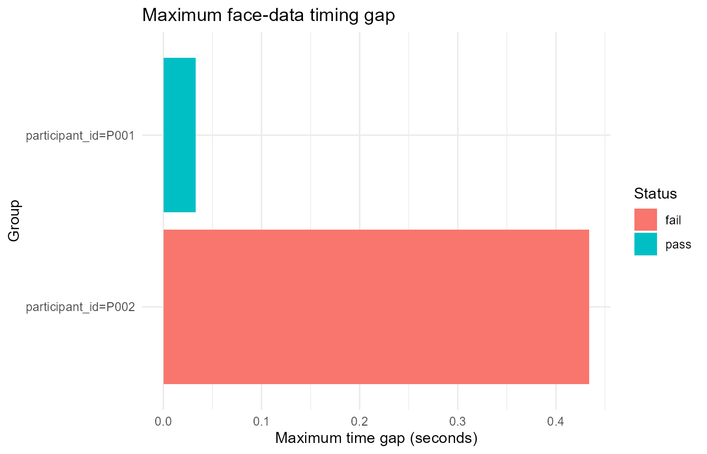

External face-data quality audit
Source:vignettes/articles/face-quality-audit.Rmd
face-quality-audit.RmdThis article demonstrates quality-control helpers for external facial-behaviour exports.
These helpers do not infer facial expressions from Gazepoint CSV files. They audit externally generated face-analysis tables after import and standardisation. The intended inputs are CSV outputs from tools such as OpenFace-style, py-feat-style, MediaPipe-style, FaceReader-style, or generic frame-level facial-behaviour pipelines.
The current scope is:
- audit face-detection validity;
- summarise confidence and success indicators;
- detect duplicate frame indices;
- inspect basic timing continuity;
- produce cautious status summaries and descriptive QC plots.
Synchronisation with Gazepoint timing, AOIs, trials, pupil, GSR, HR/IBI, or task phases is a later workflow stage.
Example face-analysis data
face <- data.frame(
participant_id = rep(c("P001", "P002"), each = 4),
frame = c(1, 2, 3, 4, 1, 2, 2, 4),
timestamp = c(0.000, 0.033, 0.066, 0.099, 0.000, 0.033, 0.066, 0.500),
confidence = c(0.98, 0.96, 0.94, 0.92, 0.95, 0.70, 0.40, 0.88),
success = c(1, 1, 1, 1, 1, 1, 1, 1),
AU04_r = c(0.05, 0.06, 0.05, 0.04, 0.10, 0.15, 0.20, 0.18),
AU12_r = c(0.20, 0.22, 0.25, 0.24, 0.10, 0.12, 0.08, 0.09),
stringsAsFactors = FALSE
)Audit quality
audit_gazepoint_face_quality() standardises
unstandardised input when needed and returns overview, group-level, and
issue-level summaries.
face_audit <- audit_gazepoint_face_quality(
face,
group_cols = "participant_id",
confidence_threshold = 0.80,
min_valid_percent = 70,
warning_valid_percent = 85,
max_time_gap_sec = 0.20,
max_duplicate_frame_percent = 0
)
face_audit$overview
#> # A tibble: 1 × 25
#> n_groups n_rows n_valid valid_percent n_invalid invalid_percent
#> <int> <int> <int> <dbl> <int> <dbl>
#> 1 2 8 6 75 2 25
#> # ℹ 19 more variables: n_unknown_validity <int>,
#> # unknown_validity_percent <dbl>, n_missing_confidence <int>,
#> # confidence_missing_percent <dbl>, mean_confidence <dbl>,
#> # median_confidence <dbl>, min_confidence <dbl>, max_confidence <dbl>,
#> # n_success <int>, success_percent <dbl>, n_duplicate_frames <int>,
#> # duplicate_frame_percent <dbl>, n_missing_time <int>,
#> # n_nonpositive_time_steps <int>, max_time_gap_sec <dbl>, …
face_audit$group_summary
#> # A tibble: 2 × 26
#> face_quality_group participant_id n_rows n_valid valid_percent n_invalid
#> <chr> <chr> <int> <int> <dbl> <int>
#> 1 participant_id=P001 P001 4 4 100 0
#> 2 participant_id=P002 P002 4 2 50 2
#> # ℹ 20 more variables: invalid_percent <dbl>, n_unknown_validity <int>,
#> # unknown_validity_percent <dbl>, n_missing_confidence <int>,
#> # confidence_missing_percent <dbl>, mean_confidence <dbl>,
#> # median_confidence <dbl>, min_confidence <dbl>, max_confidence <dbl>,
#> # n_success <int>, success_percent <dbl>, n_duplicate_frames <int>,
#> # duplicate_frame_percent <dbl>, n_missing_time <int>,
#> # n_nonpositive_time_steps <int>, max_time_gap_sec <dbl>, …
face_audit$issue_summary
#> # A tibble: 6 × 5
#> issue n_groups_affected n_groups threshold status
#> <chr> <int> <int> <dbl> <chr>
#> 1 valid_percent_below_minimum 1 2 70 review
#> 2 valid_percent_below_warning 1 2 85 review
#> 3 unknown_validity 0 2 NA ok
#> 4 duplicate_frames 1 2 0 review
#> 5 large_time_gaps 1 2 0.2 review
#> 6 missing_confidence 0 2 NA okThe object keeps the standardised data used for the audit.
head(face_audit$data)
#> # A tibble: 6 × 16
#> face_source face_file participant_id face_id face_frame face_time_sec
#> <chr> <chr> <chr> <chr> <int> <dbl>
#> 1 openface NA P001 NA 1 0
#> 2 openface NA P001 NA 2 0.033
#> 3 openface NA P001 NA 3 0.066
#> 4 openface NA P001 NA 4 0.099
#> 5 openface NA P002 NA 1 0
#> 6 openface NA P002 NA 2 0.033
#> # ℹ 10 more variables: face_time_ms <dbl>, face_confidence <dbl>,
#> # face_success <lgl>, face_valid <lgl>, frame <dbl>, timestamp <dbl>,
#> # confidence <dbl>, success <dbl>, AU04_r <dbl>, AU12_r <dbl>Compact summary
summarize_gazepoint_face_quality() returns the overview
table. The British spelling alias is also available.
summarize_gazepoint_face_quality(face_audit)
#> # A tibble: 1 × 25
#> n_groups n_rows n_valid valid_percent n_invalid invalid_percent
#> <int> <int> <int> <dbl> <int> <dbl>
#> 1 2 8 6 75 2 25
#> # ℹ 19 more variables: n_unknown_validity <int>,
#> # unknown_validity_percent <dbl>, n_missing_confidence <int>,
#> # confidence_missing_percent <dbl>, mean_confidence <dbl>,
#> # median_confidence <dbl>, min_confidence <dbl>, max_confidence <dbl>,
#> # n_success <int>, success_percent <dbl>, n_duplicate_frames <int>,
#> # duplicate_frame_percent <dbl>, n_missing_time <int>,
#> # n_nonpositive_time_steps <int>, max_time_gap_sec <dbl>, …
summarise_gazepoint_face_quality(face)
#> # A tibble: 1 × 25
#> n_groups n_rows n_valid valid_percent n_invalid invalid_percent
#> <int> <int> <int> <dbl> <int> <dbl>
#> 1 2 8 6 75 2 25
#> # ℹ 19 more variables: n_unknown_validity <int>,
#> # unknown_validity_percent <dbl>, n_missing_confidence <int>,
#> # confidence_missing_percent <dbl>, mean_confidence <dbl>,
#> # median_confidence <dbl>, min_confidence <dbl>, max_confidence <dbl>,
#> # n_success <int>, success_percent <dbl>, n_duplicate_frames <int>,
#> # duplicate_frame_percent <dbl>, n_missing_time <int>,
#> # n_nonpositive_time_steps <int>, max_time_gap_sec <dbl>, …Plot quality status
plot_gazepoint_face_quality() can visualise status
counts across groups.
plot_gazepoint_face_quality(
face_audit,
plot_type = "status",
title = "Face-data quality status"
)
Plot valid-row percentages
plot_gazepoint_face_quality(
face_audit,
plot_type = "validity",
title = "Valid face-analysis rows"
)
Plot confidence
plot_gazepoint_face_quality(
face_audit,
plot_type = "confidence",
title = "Median face-detection confidence"
)
Plot timing gaps
plot_gazepoint_face_quality(
face_audit,
plot_type = "time_gaps",
title = "Maximum face-data timing gap"
)
Recommended interpretation
The audit reports data quality, not emotion validity. A group with high valid-row percentage and high confidence has better technical coverage for downstream facial-behaviour analysis. It does not prove that algorithmic emotion labels are psychologically valid.
Prefer cautious language such as:
- face-detection confidence;
- face-analysis coverage;
- valid facial-behaviour frames;
- action-unit availability;
- head-pose availability;
- timing continuity;
- facial-behaviour data quality.
Avoid unsupported language such as:
- true emotion detection;
- micro-expression evidence;
- hidden affect;
- psychological diagnosis;
- participant emotional state inferred directly from a classifier.
Suggested workflow position
A transparent workflow is:
- import external face-analysis CSVs with
read_gazepoint_face_export(); - standardise timing, frame, confidence, and validity columns with
standardize_gazepoint_face_columns(); - audit quality with
audit_gazepoint_face_quality(); - review quality summaries and plots;
- only then proceed to synchronisation with Gazepoint timing, trial windows, AOIs, pupil, GSR, HR/IBI, or task phases.